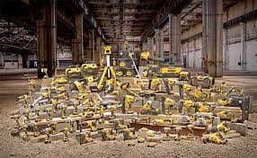

В ногу со временем. Почему стоит выбрать аккумуляторный инструмент?
Свобода от проводов – ведущее направление последних десятилетий. Телефоны, ноутбуки, пылесосы и даже автомобили – сегодня все может работать от обычных батареек или мощных аккумуляторов. И даже к робототехнике мы привыкли, а вот беспроводные инструменты до сих пор вызывают сомнения. Мы по-прежнему предпочитаем электрические или бензиновые аналоги. Как избавиться от стереотипов и научиться работать свободно? Расскажем в нашем обзоре.
Несколько слов о развитии аккумуляторного инструмента
Только представьте: первые аккумуляторные изделия появились в начале ХХ века. Это были фонари и радиостанции. Использовались они в основном на производстве, но довольно быстро завоевали популярность среди обычных пользователей. И производители начали борьбу за новую нишу рынка.
Первые аккумуляторные инструменты появились в конце 1980-х годов. Именно тогда началось производство промышленных никель-кадмиевых источников питания.
Какими были первые аккумуляторы? Напряжение составляло 1,2 В, вес – примерно 50 г, а вырабатываемый ток – максимум 7 А. Ресурс их был всего 200 – 300 циклов заряда/разряда, т.е. год-два работы. Именно такие аккумуляторы были установлены в первых беспроводных отвертках.
Спустя десятилетие на рынке появились аккумуляторы с емкостью 1,3 Ач и отдачей до 15 А. Выше стал и ресурс. Количество циклов увеличилось до 1000 зарядов/разрядов. При этом напряжение выросло до 7,2 В.
Современные батареи имеют емкость 2 Ач для бытовых и от 4 Ач для профессиональных инструментов. Это позволяет им долгое время работать без подзарядки. При этом напряжение аккумуляторов тоже выросло. Универсальными считаются 18-вольтные источники питания. Они оптимально подходят для решения домашних задач. А для профессионалов производители предлагают аккумуляторы с напряжением от 40 до 82 В, благодаря которым эффективность инструмента не уступает электрическим и бензиновым аналогам, а иногда и превосходит их. Среднее число циклов заряда/разряда равняется 2000.
5 плюсов современных аккумуляторных инструментов и техники
- Свобода действий по сравнению с сетевыми аналогами
- Удобство работы по сравнению с сетевыми аналогами
- Простая эксплуатация по сравнению с бензиновой техникой
- Безопасная работа по сравнению с бензиновой техникой
- Выгодное решение по сравнению с сетевыми и бензиновыми аналогам
Аккумуляторные инструменты для ремонта
Перфоратор, штроборез, болгарка и дрель-шуруповерт – без них не справиться с ремонтно-строительными работами. Если вы запланировали ремонт дома или на даче и уже продумали дизайн, выбрали цвет стен, составили смету и закупили стройматериалы, выполнить все задуманное невозможно без минимального набора инструментов.
Например, шуруповерт. Универсальное устройство, которое потребуется не только при монтаже гипсокартонных конструкций, но и во время сборки мебели. А если есть функция удара, то и стену просверлить!
Шуруповерт на батарее удобен, если работать придется в ограниченном пространстве. Например, когда надо собрать стеллажи в небольшой гардеробной. Провода сетевого инструмента будут путаться под ногами или цепляться за мебель, ограничивая при этом ваши действия. Современный аккумуляторный шуруповерт может на одном заряде завернуть примерно 300 саморезов. Этого достаточно, чтобы прикрутить фанеру на пол, например, перед укладкой ламината. При этом на восполнение энергии требуется не больше часа.
- Надежность
- Контроль
- Удобство
- Больше возмосностей
- Аккуратная работа
- Качество
- Безопасность
- Свобода
Подведем итоги
Время не стоит на месте, и производители инструментов и техники постоянно находятся в поиске. В поиске новых решений, которые принесут пользу человеку. Современные аккумуляторные инструменты – прямое тому доказательство. Если раньше они были маломощными, неэффективными, с маленьким ресурсом, то сегодня они не уступают электрическим и бензиновым собратьям. С ними ничто не будет ограничивать ваш рабочий процесс и творческий порыв.